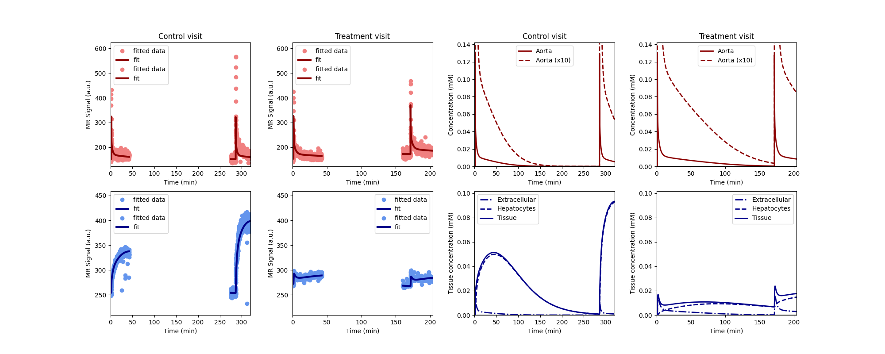

Note
Go to the end to download the full example code.
Liver Drug effect in two scans#
These example shows the use of the InverseAortaLiverSplitDrug model to
simultaneously fit signals measured in aorta and liver over two
different days, with two scans on each day. The second day, an
inhibitor drug is administered before the first scan of the day.
import dcmri as dc
Model setup#
Since we are using data from the TRISTAN healthy volunteer study with rifampicin, we’ll configure the model with the following options:
model = dc.InverseAortaLiverSplitDrug(
heartlung='pfcomp', # Smoother first pass data
organs='2cxm', # Long acquisition times reveal extravasation
liver='1I-IC', # Intracellular agent
non_stationary='U', # Uptake rate changes during the course of the experiment
baseline='measured', # Data are available on precontrast T1
sequence='ZTE-3D-SPGR-SS', # Echo times are assumed to be zero
t2s_relaxation_ao=None, # No T2* relaxation with TE=0
t2s_relaxation_li=None, # No T2* relaxation with TE=0
calibrate=True, # Derive signal scaling factor from data
trigger=True, # Signals are retrospectively triggered
bolus='dual', # Two independent injections performed
estimate_bat='ttp', # Use the dedicated BAT estimator
)
Let’s see what input parameters are needed for this model:
model.print_inputs()
+--------------------------------------------------------------------------------------------------------------------------------------------------------+
| InverseAortaLiverSplitDrug instance - inputs (n = 99) |
+----------------+------------+----------+-------------------------------------------------------------+-----------------+---------------+-------+-------+
| Key | Value | Unit | Name | Group | Bounds | DICOM | OSIPI |
+----------------+------------+----------+-------------------------------------------------------------+-----------------+---------------+-------+-------+
| B1corr_1_ao | 1 | | 1st B1-correction factor in the aorta | electromagnetic | (0, 5) | | |
| B1corr_1_li | 1 | | 1st B1-correction factor in the liver | electromagnetic | (0, 5) | | |
| B1corr_2_ao | 1 | | 2nd B1-correction factor in the aorta | electromagnetic | (0, 5) | | |
| B1corr_2_li | 1 | | 2nd B1-correction factor in the liver | electromagnetic | (0, 5) | | |
| B1corr_3_ao | 1 | | 3rd B1-correction factor in the aorta | electromagnetic | (0, 5) | | |
| B1corr_3_li | 1 | | 3rd B1-correction factor in the liver | electromagnetic | (0, 5) | | |
| B1corr_4_ao | 1 | | 4th B1-correction factor in the aorta | electromagnetic | (0, 5) | | |
| B1corr_4_li | 1 | | 4th B1-correction factor in the liver | electromagnetic | (0, 5) | | |
| me | 1 | A cm2/mL | equilibrium magnetization | electromagnetic | (0, 5) | | |
| R1_b | 0.65 | Hz | tissue R1 in the blood | electromagnetic | (0, 5) | | |
| R1_li | 0.65 | Hz | tissue R1 in the liver | electromagnetic | (0, 5) | | |
+----------------+------------+----------+-------------------------------------------------------------+-----------------+---------------+-------+-------+
| dose_tolerance | 0.1 | | dose tolerance | hyperparameters | | | |
| dt | 0.5 | sec | pseudo-continuous time step | hyperparameters | | | |
+----------------+------------+----------+-------------------------------------------------------------+-----------------+---------------+-------+-------+
| agent | gadoterate | | contrast agent generic name | indicator | | | |
| dose_1 | 0.1 | mL/kg | 1st contrast agent dose | indicator | (0, 0.2) | | |
| dose_2 | 0.1 | mL/kg | 2nd contrast agent dose | indicator | (0, 0.2) | | |
| dose_3 | 0.1 | mL/kg | 3rd contrast agent dose | indicator | (0, 0.2) | | |
| dose_4 | 0.1 | mL/kg | 4th contrast agent dose | indicator | (0, 0.2) | | |
| rate_1 | 1 | mL/sec | 1st injection rate | indicator | (0, 10) | | |
| rate_2 | 1 | mL/sec | 2nd injection rate | indicator | (0, 10) | | |
| rate_3 | 1 | mL/sec | 3rd injection rate | indicator | (0, 10) | | |
| rate_4 | 1 | mL/sec | 4th injection rate | indicator | (0, 10) | | |
+----------------+------------+----------+-------------------------------------------------------------+-----------------+---------------+-------+-------+
| pfree | None | a.u. | set of free parameters | inverse problem | | | |
+----------------+------------+----------+-------------------------------------------------------------+-----------------+---------------+-------+-------+
| CO | 100 | mL/sec | cardiac output | physiological | (0, 500) | | |
| D_hl | 0.2 | | transit time dispersion in the heart and Lungs | physiological | (0.01, 0.99) | | |
| E_ki | 0.15 | | extraction fraction in the kidney | physiological | (0, 1) | | |
| E_or | 0.15 | | extraction fraction in the organs | physiological | (0, 0.5) | | |
| Ef_1_li | 0.1 | | 1st final extraction fraction in the liver | physiological | (0.0, 1.0) | | |
| Ef_2_li | 0.1 | | 2nd final extraction fraction in the liver | physiological | (0.0, 1.0) | | |
| Ei_1_li | 0.1 | | 1st initial extraction fraction in the liver | physiological | (0.0, 1.0) | | |
| Ei_2_li | 0.1 | | 2nd initial extraction fraction in the liver | physiological | (0.0, 1.0) | | |
| fCO_li | 0.1 | | fraction of the cardiac output in the liver | physiological | (0, 0.5) | | |
| H | 0.45 | | hematocrit | physiological | (0, 1) | | |
| T_1_h | 14400 | sec | 1st mean transit time in hepatocytes | physiological | (600, 21600) | | |
| T_2_h | 14400 | sec | 2nd mean transit time in hepatocytes | physiological | (600, 21600) | | |
| T_b_or | 20 | sec | mean transit time in blood of the organs | physiological | (0, 60) | | |
| T_e_or | 120 | sec | mean transit time in extracellular space of the organs | physiological | (0, 800) | | |
| T_hl | 10 | sec | mean transit time in the heart and Lungs | physiological | (0, 30) | | |
| T_lag | 30 | sec | mean transit time in the liver artery and gut | physiological | (0.0, 60) | | |
| v_e_li | 0.25 | mL/cm3 | volume fraction in extracellular space of the liver | physiological | (0.01, 0.5) | | |
| v_li | 1 | mL/cm3 | volume fraction in the liver | physiological | (0, 1) | | |
+----------------+------------+----------+-------------------------------------------------------------+-----------------+---------------+-------+-------+
| FA_1 | 15 | deg | 1st flip angle | sequence | (0, 180) | | |
| FA_2 | 15 | deg | 2nd flip angle | sequence | (0, 180) | | |
| FA_3 | 15 | deg | 3rd flip angle | sequence | (0, 180) | | |
| FA_4 | 15 | deg | 4th flip angle | sequence | (0, 180) | | |
| field_strength | 3 | T | magnetic field strength | sequence | (0, 20) | | |
| Nk0_1 | 64 | | 1st number of acquired phase lines to the center of k-space | sequence | (0, 1000) | | |
| Nk0_2 | 64 | | 2nd number of acquired phase lines to the center of k-space | sequence | (0, 1000) | | |
| Nk0_3 | 64 | | 3rd number of acquired phase lines to the center of k-space | sequence | (0, 1000) | | |
| Nk0_4 | 64 | | 4th number of acquired phase lines to the center of k-space | sequence | (0, 1000) | | |
| Nph_1 | 128 | | 1st number of acquired phase lines in k-space | sequence | (0, 1000) | | |
| Nph_2 | 128 | | 2nd number of acquired phase lines in k-space | sequence | (0, 1000) | | |
| Nph_3 | 128 | | 3rd number of acquired phase lines in k-space | sequence | (0, 1000) | | |
| Nph_4 | 128 | | 4th number of acquired phase lines in k-space | sequence | (0, 1000) | | |
| TR_1 | 0.005 | sec | 1st repetition time | sequence | (0, 1) | | |
| TR_2 | 0.005 | sec | 2nd repetition time | sequence | (0, 1) | | |
| TR_3 | 0.005 | sec | 3rd repetition time | sequence | (0, 1) | | |
| TR_4 | 0.005 | sec | 4th repetition time | sequence | (0, 1) | | |
+----------------+------------+----------+-------------------------------------------------------------+-----------------+---------------+-------+-------+
| iStrig_1_ao | None | | 1st indices of the signal trigger in the aorta | signal | | | |
| iStrig_1_li | None | | 1st indices of the signal trigger in the liver | signal | | | |
| iStrig_2_ao | None | | 2nd indices of the signal trigger in the aorta | signal | | | |
| iStrig_2_li | None | | 2nd indices of the signal trigger in the liver | signal | | | |
| iStrig_3_ao | None | | 3rd indices of the signal trigger in the aorta | signal | | | |
| iStrig_3_li | None | | 3rd indices of the signal trigger in the liver | signal | | | |
| iStrig_4_ao | None | | 4th indices of the signal trigger in the aorta | signal | | | |
| iStrig_4_li | None | | 4th indices of the signal trigger in the liver | signal | | | |
| nb_1 | 1 | a.u. | 1st number of baseline time points | signal | | | |
| nb_2 | 1 | a.u. | 2nd number of baseline time points | signal | | | |
| nb_3 | 1 | a.u. | 3rd number of baseline time points | signal | | | |
| nb_4 | 1 | a.u. | 4th number of baseline time points | signal | | | |
| NSR_1_ao | 0.0 | | 1st noise-to-signal ratio in the aorta | signal | (0, 100000.0) | | |
| NSR_1_li | 0.0 | | 1st noise-to-signal ratio in the liver | signal | (0, 100000.0) | | |
| NSR_2_ao | 0.0 | | 2nd noise-to-signal ratio in the aorta | signal | (0, 100000.0) | | |
| NSR_2_li | 0.0 | | 2nd noise-to-signal ratio in the liver | signal | (0, 100000.0) | | |
| NSR_3_ao | 0.0 | | 3rd noise-to-signal ratio in the aorta | signal | (0, 100000.0) | | |
| NSR_3_li | 0.0 | | 3rd noise-to-signal ratio in the liver | signal | (0, 100000.0) | | |
| NSR_4_ao | 0.0 | | 4th noise-to-signal ratio in the aorta | signal | (0, 100000.0) | | |
| NSR_4_li | 0.0 | | 4th noise-to-signal ratio in the liver | signal | (0, 100000.0) | | |
| S_1_ao | 1.0 | a.u. | 1st signal in the aorta | signal | (0, 5) | | |
| S_1_li | 1.0 | a.u. | 1st signal in the liver | signal | (0, 5) | | |
| S_2_ao | 1.0 | a.u. | 2nd signal in the aorta | signal | (0, 5) | | |
| S_2_li | 1.0 | a.u. | 2nd signal in the liver | signal | (0, 5) | | |
| S_3_ao | 1.0 | a.u. | 3rd signal in the aorta | signal | (0, 5) | | |
| S_3_li | 1.0 | a.u. | 3rd signal in the liver | signal | (0, 5) | | |
| S_4_ao | 1.0 | a.u. | 4th signal in the aorta | signal | (0, 5) | | |
| S_4_li | 1.0 | a.u. | 4th signal in the liver | signal | (0, 5) | | |
| tS_1_ao | 0.0 | sec | 1st signal time points in the aorta | signal | | | |
| tS_1_li | 0.0 | sec | 1st signal time points in the liver | signal | | | |
| tS_2_ao | 0.0 | sec | 2nd signal time points in the aorta | signal | | | |
| tS_2_li | 0.0 | sec | 2nd signal time points in the liver | signal | | | |
| tS_3_ao | 0.0 | sec | 3rd signal time points in the aorta | signal | | | |
| tS_3_li | 0.0 | sec | 3rd signal time points in the liver | signal | | | |
| tS_4_ao | 0.0 | sec | 4th signal time points in the aorta | signal | | | |
| tS_4_li | 0.0 | sec | 4th signal time points in the liver | signal | | | |
+----------------+------------+----------+-------------------------------------------------------------+-----------------+---------------+-------+-------+
| vol_1_ao | 1 | cm3 | 1st ROI volume in the aorta | whole-body | (0.0, 1000) | | |
| vol_1_li | 1000 | cm3 | 1st ROI volume in the liver | whole-body | (0, 10000) | | |
| vol_2_ao | 1 | cm3 | 2nd ROI volume in the aorta | whole-body | (0.0, 1000) | | |
| vol_2_li | 1000 | cm3 | 2nd ROI volume in the liver | whole-body | (0, 10000) | | |
| weight | 70 | kg | body weight | whole-body | (0, 300) | | |
+--------------------------------------------------------------------------------------------------------------------------------------------------------+
Fitting the model#
# --- Load the data
data = dc.load_tristan_humans('tristan_humans_healthy_rifampicin')
# --- Subject to analyse
# subj = 'LDS-008' # big drop good fit
# subj = 'LDS-007' # good drop good fit
# subj = 'LDS-006' # small increase ok fit
# subj = 'LDS-004' # as expected
subj = 'LDS-002' # no increase
# subj = 'LDS-003' # single dose
# --- Fit the data of subject LDS-002
#' dict_keys([' 'LDS-010', 'LDS-009'])
result = model(data[subj], verbose=2)
Iteration Total nfev Cost Cost reduction Step norm Optimality
0 1 4.3528e+04 3.93e+05
1 2 7.8932e+03 3.56e+04 3.45e-01 3.57e+04
2 3 3.5382e+03 4.35e+03 4.03e-01 6.82e+03
3 4 2.3062e+03 1.23e+03 6.00e-01 1.42e+04
4 5 1.7360e+03 5.70e+02 3.29e-01 3.22e+03
5 7 1.6257e+03 1.10e+02 1.42e-01 1.16e+03
6 8 1.5942e+03 3.15e+01 2.87e-01 8.17e+03
7 9 1.5669e+03 2.73e+01 1.90e-01 4.65e+03
8 12 1.5458e+03 2.11e+01 1.27e-02 2.13e+02
9 13 1.5441e+03 1.65e+00 2.55e-02 2.74e+02
10 14 1.5423e+03 1.78e+00 2.46e-02 1.77e+02
11 17 1.5421e+03 2.68e-01 3.30e-03 6.13e+01
12 18 1.5418e+03 2.44e-01 3.24e-03 4.72e+01
13 19 1.5418e+03 4.66e-02 6.16e-03 6.53e+01
14 20 1.5417e+03 8.02e-02 1.62e-03 6.27e+01
15 21 1.5416e+03 1.40e-01 1.69e-03 2.86e+01
16 23 1.5415e+03 2.91e-02 7.83e-04 6.14e+01
17 24 1.5415e+03 1.89e-02 7.36e-04 2.97e+01
18 25 1.5415e+03 1.22e-02 7.74e-04 6.67e+01
19 26 1.5415e+03 2.49e-02 1.85e-04 5.05e+01
20 27 1.5415e+03 5.32e-03 3.67e-04 3.13e+01
21 28 1.5415e+03 7.05e-03 9.59e-05 3.12e+01
22 29 1.5415e+03 9.53e-03 1.92e-04 4.63e+01
23 31 1.5415e+03 3.09e-03 4.57e-05 3.13e+01
24 33 1.5415e+03 8.83e-04 1.20e-05 3.13e+01
25 36 1.5415e+03 1.10e-04 1.50e-06 3.13e+01
26 38 1.5415e+03 8.17e-06 7.50e-07 4.35e+01
27 39 1.5415e+03 1.85e-05 1.79e-07 4.35e+01
28 40 1.5415e+03 1.08e-05 3.58e-07 3.13e+01
`ftol` termination condition is satisfied.
Function evaluations 40, initial cost 4.3528e+04, final cost 1.5415e+03, first-order optimality 3.13e+01.
Verify that the optimization has converged to a solution:

The model first the data well, so we can now consider the values for the derived parameters
dc.print_quantities(result['pars'], 'Drug effect', digits=3)
+------------------------------------------------------------------------------------------------------------------------------------------------------------------------------------+
| Drug effect |
+-------------+-----------+------------+------------------------------------------------------------------------------------+-----------------+----------------------+-------+-------+
| Key | Value | Unit | Name | Group | Bounds | DICOM | OSIPI |
+-------------+-----------+------------+------------------------------------------------------------------------------------+-----------------+----------------------+-------+-------+
| BAT_1 | 80.9 | sec | 1st bolus arrival time | indicator | (-30, 30) | | |
| BAT_2 | 17200.0 | sec | 2nd bolus arrival time | indicator | (-30, 30) | | |
| BAT_3 | 72.0 | sec | 3rd bolus arrival time | indicator | (-30, 30) | | |
| BAT_4 | 10300.0 | sec | 4th bolus arrival time | indicator | (-30, 30) | | |
+-------------+-----------+------------+------------------------------------------------------------------------------------+-----------------+----------------------+-------+-------+
| CL_1_p | 1.44 | mL/sec | 1st Contrast agent clearance in plasma | physiological | (0.0, 100) | | |
| CL_2_p | 0.0793 | mL/sec | 2nd Contrast agent clearance in plasma | physiological | (0.0, 100) | | |
| CO | 57.5 | mL/sec | cardiac output | physiological | (0, 500) | | |
| D_hl | 0.931 | | transit time dispersion in the heart and Lungs | physiological | (0.01, 0.99) | | |
| E_1_li | 0.385 | | 1st extraction fraction in the liver | physiological | (0.0, 1.0) | | |
| E_2_li | 0.0334 | | 2nd extraction fraction in the liver | physiological | (0.0, 1.0) | | |
| E_ki | 0.0525 | | extraction fraction in the kidney | physiological | (0, 1) | | |
| E_or | 0.241 | | extraction fraction in the organs | physiological | (0, 0.5) | | |
| Ef_1_li | 0.541 | | 1st final extraction fraction in the liver | physiological | (0.0, 1.0) | | |
| Ef_2_li | 0.04 | | 2nd final extraction fraction in the liver | physiological | (0.0, 1.0) | | |
| Ei_1_li | 0.229 | | 1st initial extraction fraction in the liver | physiological | (0.0, 1.0) | | |
| Ei_2_li | 0.0268 | | 2nd initial extraction fraction in the liver | physiological | (0.0, 1.0) | | |
| F_1_b_li | 0.0061 | mL/sec/cm3 | 1st flow per unit tissue in blood of the liver | physiological | (0, 0.1) | | |
| F_1_p_li | 0.00336 | mL/sec/cm3 | 1st flow per unit tissue in plasma of the liver | physiological | (0, 0.05) | | |
| F_2_b_li | 0.0052 | mL/sec/cm3 | 2nd flow per unit tissue in blood of the liver | physiological | (0, 0.1) | | |
| F_2_p_li | 0.00286 | mL/sec/cm3 | 2nd flow per unit tissue in plasma of the liver | physiological | (0, 0.05) | | |
| fCO_li | 0.0726 | | fraction of the cardiac output in the liver | physiological | (0, 0.5) | | |
| H | 0.45 | | hematocrit | physiological | (0, 1) | | |
| k_1_e2h | 0.0021 | mL/sec/cm3 | 1st tissue transfer rate from extracellular space to hepatocytes | physiological | (0, 0.006) | | |
| K_1_e2h | 0.0108 | 1/sec | 1st transfer rate from extracellular space to hepatocytes | physiological | (0.0, 0.1) | | |
| k_1_h2b | 0.000121 | mL/sec/cm3 | 1st tissue transfer rate from hepatocytes to blood | physiological | (0.0, 0.1) | | |
| K_1_h2b | 0.000186 | 1/sec | 1st transfer rate from hepatocytes to blood | physiological | (0.0, 0.1) | | |
| k_2_e2h | 9.88e-05 | mL/sec/cm3 | 2nd tissue transfer rate from extracellular space to hepatocytes | physiological | (0, 0.006) | | |
| K_2_e2h | 0.00051 | 1/sec | 2nd transfer rate from extracellular space to hepatocytes | physiological | (0.0, 0.1) | | |
| k_2_h2b | 4.26e-05 | mL/sec/cm3 | 2nd tissue transfer rate from hepatocytes to blood | physiological | (0.0, 0.1) | | |
| K_2_h2b | 6.58e-05 | 1/sec | 2nd transfer rate from hepatocytes to blood | physiological | (0.0, 0.1) | | |
| kc_1_e2h | 0.00296 | | 1st diurnal change of tissue transfer rate from extracellular space to hepatocytes | physiological | (0.0, 0.1) | | |
| kc_2_e2h | 4.06e-05 | | 2nd diurnal change of tissue transfer rate from extracellular space to hepatocytes | physiological | (0.0, 0.1) | | |
| kd_e2h | -0.00202 | mL/sec/cm3 | drug effect on tissue transfer rate from extracellular space to hepatocytes | physiological | (0.0, 0.1) | | |
| kd_h2b | -7.79e-05 | mL/sec/cm3 | drug effect on tissue transfer rate from hepatocytes to blood | physiological | (0.0, 0.1) | | |
| ke_e2h | -0.963 | | drug effect size on tissue transfer rate from extracellular space to hepatocytes | physiological | (-100, 100) | | |
| ke_h2b | -0.646 | | drug effect size on tissue transfer rate from hepatocytes to blood | physiological | (-100, 100) | | |
| kf_1_e2h | 0.00395 | mL/sec/cm3 | 1st final tissue transfer rate from extracellular space to hepatocytes | physiological | (0, 0.006) | | |
| kf_2_e2h | 0.000119 | mL/sec/cm3 | 2nd final tissue transfer rate from extracellular space to hepatocytes | physiological | (0, 0.006) | | |
| ki_1_e2h | 0.000996 | mL/sec/cm3 | 1st initial tissue transfer rate from extracellular space to hepatocytes | physiological | (0, 0.006) | | |
| ki_2_e2h | 7.86e-05 | mL/sec/cm3 | 2nd initial tissue transfer rate from extracellular space to hepatocytes | physiological | (0, 0.006) | | |
| Ktrans_1_li | 0.00129 | mL/sec/cm3 | 1st plasma clearance in the liver | physiological | (0.0, 0.1) | | |
| Ktrans_2_li | 9.55e-05 | mL/sec/cm3 | 2nd plasma clearance in the liver | physiological | (0.0, 0.1) | | |
| T_1_e_li | 35.5 | sec | 1st mean transit time in extracellular space of the liver | physiological | (0.1, 60) | | |
| T_1_h | 5370.0 | sec | 1st mean transit time in hepatocytes | physiological | (600, 21600) | | |
| T_2_e_li | 65.5 | sec | 2nd mean transit time in extracellular space of the liver | physiological | (0.1, 60) | | |
| T_2_h | 15200.0 | sec | 2nd mean transit time in hepatocytes | physiological | (600, 21600) | | |
| T_b_or | 34.7 | sec | mean transit time in blood of the organs | physiological | (0, 60) | | |
| T_e_or | 514.0 | sec | mean transit time in extracellular space of the organs | physiological | (0, 800) | | |
| T_hl | 28.3 | sec | mean transit time in the heart and Lungs | physiological | (0, 30) | | |
| T_lag | 9.54 | sec | mean transit time in the liver artery and gut | physiological | (0.0, 60) | | |
| v_e_li | 0.194 | mL/cm3 | volume fraction in extracellular space of the liver | physiological | (0.01, 0.5) | | |
| v_li | 1.0 | mL/cm3 | volume fraction in the liver | physiological | (0, 1) | | |
+-------------+-----------+------------+------------------------------------------------------------------------------------+-----------------+----------------------+-------+-------+
| AUCC_1 | 0.0861 | M*sec | 1st area under the concentration time curve | signal | (0, 1000000000000.0) | | |
| AUCC_2 | 0.0197 | M*sec | 2nd area under the concentration time curve | signal | (0, 1000000000000.0) | | |
| RE_1 | 0.289 | | 1st relative signal enhancement | signal | (0, 1000) | | |
| RE_2 | 0.0509 | | 2nd relative signal enhancement | signal | (0, 1000) | | |
+-------------+-----------+------------+------------------------------------------------------------------------------------+-----------------+----------------------+-------+-------+
| vol_1_ao | 1.0 | cm3 | 1st ROI volume in the aorta | whole-body | (0.0, 1000) | | |
| vol_1_li | 684.0 | cm3 | 1st ROI volume in the liver | whole-body | (0, 10000) | | |
| vol_2_ao | 1.0 | cm3 | 2nd ROI volume in the aorta | whole-body | (0.0, 1000) | | |
| vol_2_li | 802.0 | cm3 | 2nd ROI volume in the liver | whole-body | (0, 10000) | | |
| weight | 63.9 | kg | body weight | whole-body | (0, 300) | | |
+------------------------------------------------------------------------------------------------------------------------------------------------------------------------------------+
Total running time of the script: (1 minutes 36.798 seconds)